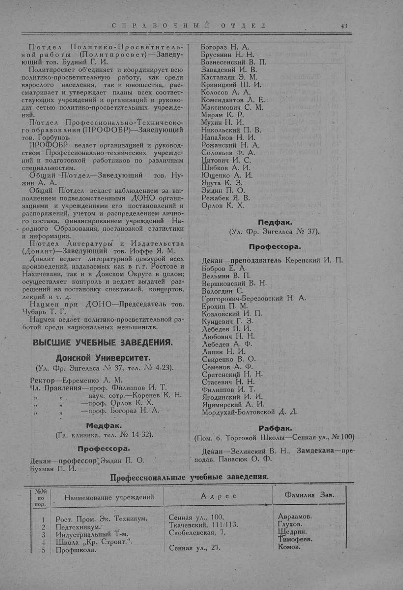

Лист источника 93
Скан

Распознанный текст
СПРАВОЧНЫЙ ОТДЕЛ 43
П/отдел Политико-Просветитель-
ной работы (Политпросвет)—Заведу-
ющий тов. Будный Г. И.
Политпросвет об’единяет и координирует всю
политико-просветительную работу, как среди
взрослого населения, так и юношества, рас-
сматривает и утверждает планы всех соответ-
ствующих учреждений и организаций и руково-
дит сетью политико-просветительных учрежде-
ний.
П/отдел Профессионально-Техническо-
го образования (ПРОФОБР)—Заведующий
тов. Горбунов.
ПРОФОБР ведает организацией и руковод-
ством Профессионально-технических учрежде-
ний и подготовкой работников по различным
специальностям.
Общий П/отдел—Заведующий тов. Ну-
жин А. А.
Общий П/отдел ведает наблюдением за вы-
полнением подведомственными ДОНО органи-
зациями и учреждениями его постановлений и
распоряжений, учетом и распределением лично-
го состава, финансированием учреждений На-
родного Образования, постановкой статистики
и информации.
П/отдел Литературы и Издательства
(Донлит)—Заведующий тов. Иоффе Я. М.
Донлит ведает литературной цензурой всех
произведений, издаваемых как в г. г. Ростове и
Нахичевани, так и в Донском Округе в целом;
осуществляет контроль и ведает выдачей раз-
решений на постановку спектаклей, концертов,
лекций и т. д.
Нацмен при ДОНО—Председатель тов.
Чубарь Т. Г.
Нацмен ведает политико-просветительной ра-
ботой среди национальных меньшинств.
ВЫСШИЕ УЧЕБНЫЕ ЗАВЕДЕНИЯ.
Донской Университет.
(Ул. Фр. Энгельса № 37, тел. № 4-23).
Ректор—Ефременко Л. М.
Чл. Правления—проф. Филиппов И. Т.
" " науч. сотр.—Коренев К. Н.
" " —проф. Орлов К. Х.
" " —проф. Богораз Н. А.
Медфак.
(Гл. клиника, тел. № 14-32).
Профессора.
Декан—профессор Эмдин П. О.
Бухман П. И.
Богораз Н. А.
Брусянин Н. Н.
Вознесенский В. П.
Завадский И. В.
Кастанаян Э. М.
Криницкий Ш. И.
Колосов А. А.
Комендантов Л. Е.
Максимович С. М.
Мирам К. Р.
Мухин Н. И.
Никольский П. В.
Напалков Н. И.
Рожанский Н. А.
Соловьев Ф. А.
Цитович И. С.
Шибков А. И.
Ющенко А. И.
Яцута К. З.
Эмдин П. О.
Режабек Я. В.
Орлов К. Х.
Педфак.
(Ул. Фр. Энгельса № 37).
Профессора.
Декан—преподаватель Керенский И. П.
Бобров Е. А.
Вельмин В. П.
Вершковский В. Н.
Вологдин С.
Григорович-Березовский Н. А.
Ерохин П. М.
Козловский И. П.
Кунцевич Г. З.
Лебедев П. И.
Любович Н. Н.
Лебедев А. Ф.
Ляпин Н. И.
Свиренко В. О.
Семенов А. Ф.
Сретенский Н. Н.
Стасевич Н. Н.
Филиппов И. Т.
Ягодинский И. И.
Яцимирский А. И.
Мордухай-Болтовской Д. Д.
Рабфак.
(Пом. б. Торговой Школы—Сенная ул., № 100)
Декан—Зелинский В. Н., Замдекана—пре-
подав. Панасюк О. Ф.
Профессиональные учебные заведения.
№№ по пор. Наименование учреждений Адрес Фамилия Зав.
1 Рост. Пром. Эк. Техникум. Сенная ул., 100. Авраамов.
2 Педтехникум. Ткачевский, 111/113. Глухов.
3 Индустриальный Т-м. Скобелевская, 7. Щедрин.
4 Школа „Кр. Строит.“. Тимофеев.
5 Профшкола. Сенная ул., 27. Комов.